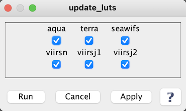

| update_luts | |
Retrieve latest lookup tables for specified sensor.
Location
Details
Command Line Usage
SeaDAS-OCSSW -> update_luts
<update_luts retrieves latest lookup tables for specified sensor.
|  |
| UI Element Name | Type | Description | Required/Optional | Default Value |
| aqua | boolean | install Aquarius files | Optional | true |
| aquarius | boolean | install MODIS Aqua files | Optional | true |
| terra | boolean | install MODIS Terra files | Optional | true |
| seawifs | boolean | install SeaWIFS files | Optional | true |
| viirsn | boolean | install VIIRS SNPP files | Optional | true |
| viirsj1 | boolean | install VIIRS JPSS1 files | Optional | true |
| UI Element Name | Type | Description |
| Run | Button | Executes the update_luts command with arguments provided in the UI. |
| Cancel | Button | Closes current processor GUI. |
| Apply | Button | Makes current arguments effective. |
| ? | Button | Displays the help content of the current command. |
usage: update_luts [-h] [-e] [-v] [-n] [--timeout TIMEOUT] MISSION
Retrieve latest lookup tables for specified sensor.
positional arguments:
MISSION sensor or platform to process; one of:
seawifs, aquarius, modisa, modist, viirsn, viirsj1, aqua, terra, npp, j1
optional arguments:
-h, --help show this help message and exit
-e, --eval also download evaluation LUTs (default: False)
-v, --verbose print status messages (default: False)
-n, --dry-run no action; preview files to be downloaded (default: False)
--timeout TIMEOUT network timeout in seconds (default: 10)